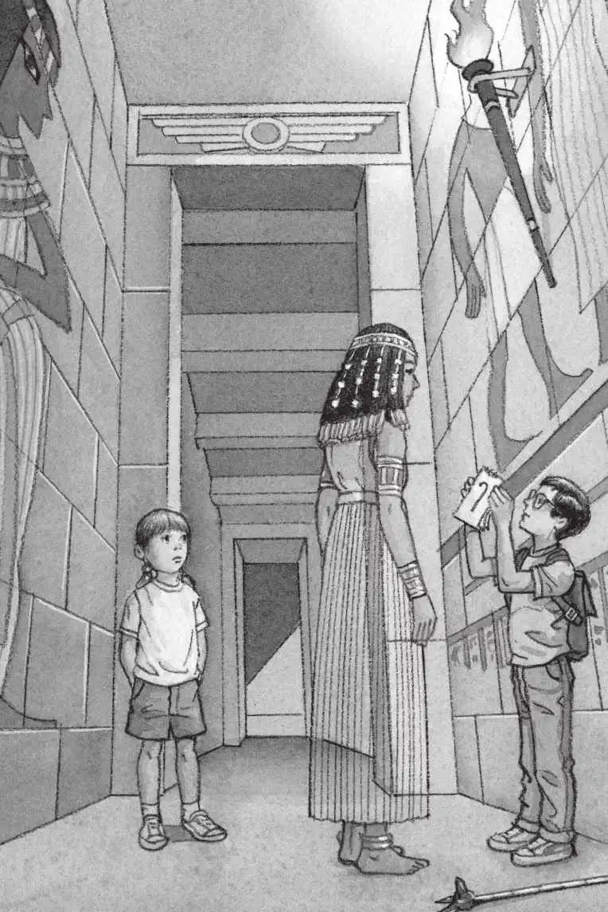
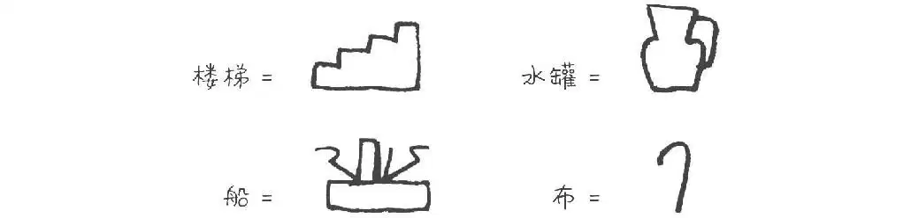

杰克和安妮眯起眼睛盯着墙壁。
墙上刻着一排小小的图形。
“这里有四个图形。”杰克告诉幽灵女王。
“你能把它们的样子描述一下吗，杰克？一个一个地讲。”幽灵女王说。
杰克仔细端详第一个图形。
“好的，”他说，“第一个图形是这样的。”他用手指在空中比画出连续的锯齿形状。
“就像楼梯一样吗？”幽灵女王问。
“对啦，楼梯！”杰克说，“就是和楼梯一样！”
幽灵女王点了点头。
“这太简单了。”杰克想。
接着，他开始研究第二个图形。
“第二个图形的底部有个长长的匣子。”他边说边在空中比画出一个长方形。
幽灵女王一脸迷茫。
“匣子顶上有三样东西，就像这样。”安妮说着就在空中比画出弯弯曲曲的线条。
幽灵女王还是一副不解的神情。
“就像一顶帽子。”杰克解释说。
“帽子？”幽灵女王迷惑地问。
“不对，更像一条船。”安妮说出自己的想法。
“船？”幽灵女王兴奋地叫道，“你是说船？”
杰克又往墙上看了一眼，说：“没错，应该是一条船。”
幽灵女王的脸上露出了微笑，她显得十分高兴。“嗯，那应该没错了。”幽灵女王说道。

杰克和安妮仔细端详第三个图形。
“第三个图形就像一个插花的花瓶。”安妮说。
“或者盛水的容器。”杰克说。
“就像一个水罐？”幽灵女王问。
“一点儿没错。”杰克说。
“是的，一个水罐。”安妮也肯定地说。
杰克和安妮开始研究最后一个图形。
“最后一个看上去像是垂着脑袋的杆子。”安妮描述道。
“像一根折弯了的棍子，”杰克说，“一头长，一头短。”
幽灵女王的脸上又露出疑惑的表情。
“等一下，”杰克说，“我把它画在我的笔记本上。画得大大的！这样你就能看清了。”
杰克放下权杖，掏出铅笔，把那个象形文字画了出来。
“这是一块折叠的布。”幽灵女王说。
“是吗？但看起来不太像啊。”杰克说。
“没错，它代表的就是这个意思。”幽灵女王说。
“哦，好吧。”杰克说。
他又看了一眼第四个象形文字，仍然看不出它是一块折叠的布，他觉得那更像一条毛巾挂在浴室的杆子上。
“总共就是这四个了。”安妮依次指着图形，将它们代表的意思重复了一遍，“楼梯、船、水罐、折叠的布。”
杰克也把这些内容记到了他的笔记本上。

“但是，这些秘密信息想告诉我们什么呢？”杰克问幽灵女王。
“跟我来，”幽灵女王说着伸出了她的一只手，“去我的墓室看看。”
说完，她仿佛风一样向前飘去。